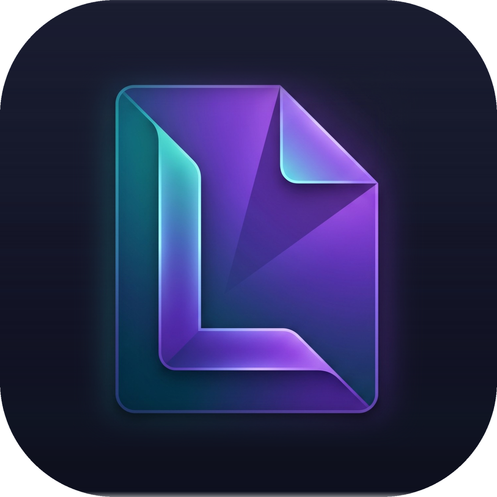

Fast, full-featured PDF editor for Windows
LumiPDF Studio lets you view, edit, annotate, convert, compress, and organize PDF documents — all offline, all in one app. Free on the Microsoft Store, with an optional one-time Premium unlock to remove ads.
Get it on Microsoft StoreYour files stay on your device — LumiPDF Studio processes everything locally by default. No account needed to get started, no subscription required.